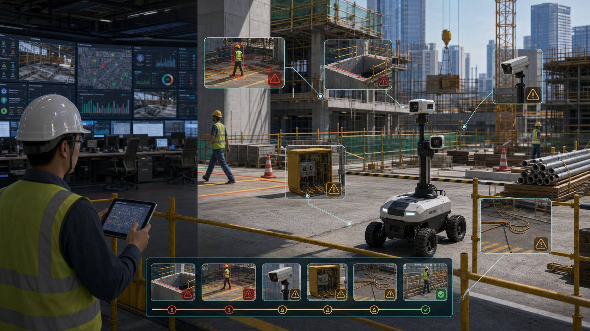

看见不等于关闭
AI 摄像头和巡检照片能发现风险，但不天然生成责任、期限、复验和销项。
Pitch 73 · Construction Safety Evidence Closure
BuildLoop 是工地安全异常的闭环证据层，把 Procore/Autodesk/智慧工地、AI 摄像头、手机巡检、机器人、无人机、监理记录和分包整改，合并成一个可派发、可复验、可销项、可上报、可给保险看的隐患 ID。
01 · Problem
项目上有摄像头、巡检表、微信群、照片、AI 告警、监理通知、业主检查、分包整改和监管模板。问题是这些证据分散在不同系统里：谁负责、何时派单、是否整改、谁复验、证据够不够、是否复发，往往要靠安全员人工追。
AI 摄像头和巡检照片能发现风险，但不天然生成责任、期限、复验和销项。
分包说“已处理”，但照片角度、位置、时间戳、复验人和前后对比经常缺失。
月底补表、截图拼报告和临时导材料，无法支撑业主、监管、保险和索赔审查。
同一个点位、班组、专业反复超期，才是项目经理和集团安全部真正要抓的信号。
02 · Why We Solve It
BuildLoop 不承诺替代安全责任，也不承诺“消灭事故”。它解决的是更可交付的商业问题：把高风险 open-days 降下来，把整改证据做完整，把分包责任说清楚，把业主和保险需要的履职材料准备好。
重大隐患动态清零、整改督办、验收销号和履职留痕已经是监管语言。
责任班组、整改期限、证据质量和复发次数决定现场能不能追得动。
安责险、经纪人和自保业主需要事故预防服务文件和可追溯风险记录。
事故、停工、返工和争议发生后，时间线和证据链直接影响成本。
集团安全部要跨项目比较：哪个专业、区域、分包和工序风险最高。
03 · Why Now
中国 2024-2026 安全生产治本攻坚要求重大事故隐患动态清零，地方智慧工地平台开始要求设备在线、报警处置和政企协同闭环。海外市场同时面对 OSHA/HSE/EU 监管、保险核保、劳动力短缺和工程索赔压力。买方不再只要一个大屏，而是要证明每个风险被处理。
04 · Insight
真正值钱的数据不是拍到多少次没戴安全帽，而是每个异常是否被分配、是否按期整改、证据是否合格、是否被复验、是否复发、哪个分包反复出现问题。BuildLoop 的核心 KPI 是 evidence-backed closure time，而不是告警数量。
把 AI 告警、巡检照片、监理通知和分包反馈合并成同一个隐患 ID。
每个异常带来源、位置、专业、分包、等级、期限、证据要求和复验人。
复发点位、超期分包、弱证据关闭和 reopen 项，变成集团和保险的风险画像。
05 · Solution
它不替代 Procore、Autodesk、HammerTech、OpenSpace、DroneDeploy、EHS 系统、智慧工地平台、安全员、监理或正式合规评价。它站在它们之间，把安全信号变成分包负责、证据完整、可复验、可回写、可导出的闭环异常。

06 · First Product
不要做泛智慧工地平台。首个产品只覆盖一个高风险项目的 4-12 路摄像头和巡检入口，选择 3-5 类能在 90 天内形成闭环指标的异常。先证明安全负责人每天能少追人，业主每周能看到可信 open-days。
洞口、临边、护栏、盖板、楼梯口和高处作业证据闭环。
安全帽、反光衣、安全带、护目镜和作业区准入只做提示与复验。
禁区闯入、设备周边、通道占用、材料堆放和人员设备接近风险。
临电箱、线缆、动火票、旁站、灭火器和可燃物距离的证据任务。
每个异常自动进入分包、责任人、SLA、复验人和销项台账。
07 · Market
同一个产品内核，两套采购语言。中国客户买智慧工地监管平台接入、项目级闭环处置、政企协同闭环处置、安措费合规使用、安责险事故预防服务和重大隐患动态清零。海外客户买 OSHA/HSE/ISO 45001 evidence、claims defense、EMR/loss-control story 和 owner risk visibility。
面向央国企施工单位、地方国资平台、城投/基建业主、EPC、智慧工地集成商、安责险服务商和监管平台生态。优先接入 GB/T 28181 视频、实名制、钉钉/企微、项目组织表和地方智慧工地数据接口。
面向总包 EHS、owner capital projects、自保承包商、保险经纪人、specialty trades 和高风险项目。优先连接 Procore、Autodesk Construction Cloud、OpenSpace、DroneDeploy、HammerTech、SafetyCulture 和 ITSM/EHS。
08 · Business Model
BuildLoop 的第一年不靠“减少事故”收费，而靠领先指标和证据产出收费：确认更快、关闭更快、超期更少、复发更少、弱证据更少、报告更快、分包责任更清楚。
人民币 6万-18万/工地，用现有摄像头；加边缘盒、摄像头、网络和安装可到 15万-35万。
人民币 12万-60万/工地/年；集团组合或城市平台 50万-300万+/年。
15k-50k 美元/工地；带摄像塔、边缘硬件、机器人/无人机和保险报告可到 40k-120k。
30k-150k 美元/工地/年；企业组合 100k-500k+ 美元/年，机器人巡检另计。
09 · ROI
年化收益 = 巡检/追单工时节省 + 审计/报告准备工时下降 + 返工/停工/索赔风险下降 + 保险事故预防服务价值 + 业主评分和分包治理价值。保险和伤害成本作为长期 loss-control 叙事，不作为 90 天硬承诺。
中位确认时间低于 10 分钟，高危异常 24 小时内完成责任分派。
80%+ 异常在 SLA 内关闭，平均 evidence-backed closure time 下降 30%。
逾期高危 open-days 下降 30%-50%，重复异常按分包和点位可追踪。
95%+ 关闭项包含位置、时间戳、前后照片/视频、复验人和来源链接。
业主、监理、安全部或保险风控接受周报和抽样 evidence pack。
10 · Go-To-Market
最佳首批客户不是纯监管平台，而是已经有 Procore/Autodesk/智慧工地/AI 摄像头，却仍然手工追整改的总包、业主和保险服务商。先把项目周会指标跑出来，再扩到集团驾驶舱和保险风控服务包。
不替换现场平台，先接 4-12 路关键视频、手机巡检、组织表和整改表。
系统自动提示弱证据：无定位、无前后对比、角度不足、复验缺失。
按 trade、subcontractor、zone 和 due date 排序，形成每周分包风险榜。
安责险、经纪人和自保业主需要 5 年留存、事故预防记录和 loss-control evidence。
11 · Competition
Procore、Autodesk、Oracle、HammerTech、SafetyCulture、viAct、Everguard、Intenseye、Protex、Voxel、OpenSpace、DroneDeploy、Buildots、Doxel、CompScience、Highwire、Avetta 都覆盖一部分。BuildLoop 的定位不是比它们更会“看见”，而是把它们看到的东西变成审计级关闭。
Procore、ACC、HammerTech、EHS 系统做观察、表单、事故、问题和纠正措施。
AI 摄像头、现实捕捉、无人机和机器人能提供照片、视频、进度和风险信号。
保险、预审、承包商风控和文件 AI 关心姿态、索赔、保费和合同风险。
统一异常 ID、证据标准、责任链、关闭验证、回写接口和 owner/insurer/audit packet。
12 · Moat
BuildLoop 的壁垒不是一个 PPE 模型，而是客户自己的项目风险图谱：楼层、区域、工序、分包、危险源、证据标准、复验人、复发记录、保险反馈和最终关闭 verdict。项目越多，越知道哪些异常真的难关、哪些证据会被驳回、哪些分包反复超期。
hazard、zone、trade、subcontractor、assignee、due date、evidence、reviewer、export。
每类隐患定义关闭条件：照片角度、视频片段、定位、签名、复验人和 before/after。
按复发、超期、弱证据、reopen 和 owner rejection 形成 contractor closure reliability。
误报、人工驳回、复验结果和机器人 episode 回流到 LeRobot/视觉数据集。
13 · Architecture
工程原则是隐私优先、弱网可用、人审关闭、与现有系统共存。边缘盒做低延迟筛选和断网缓存，云端/私有化闭环引擎管理异常、证据、回写和报表，移动端服务安全员、班组长、监理、业主和保险风控。
14 · Demo
1:12 或 1:24 桌面工地，只使用打印区域、玩具工人、QR/NFC 许可卡、虚拟 PPE 标记、泡沫临边、亚克力箱、假电缆、LED 热作标识和低速 rover。无明火、无烟雾、无市电、无吊载、无刀具、无压力、无气体、无化学品、无人可进入空间。
展示安全边界：所有 hazard 都是 symbolic props，模型不做安全许可。
overhead RGB/depth、rover camera、fiducials 和 QNN perception 识别物体与区域。
确定性规则判断临边、禁区、临电、热作、有限空间和 permit token。
人审派发整改，移动 token 或放置护栏后 rover 复访并生成 before/after。
导出 ROS 2 topics/actions、LeRobot episode、证据包、关闭时间线和复盘报告。
15 · Why Qualcomm
工地网络不稳定，视频数据敏感，告警需要低延迟，机器人需要本体推理。Qualcomm 的边缘 AI、多摄像头、工业视觉、机器人开发生态和 AI Hub/QNN 路径，让 BuildLoop 可以从“网站 pitch”走向可部署的工地边缘设备。
PPE、人员/设备、临边、通道、材料堆放和区域分割在现场先筛选。
低速 rover 和固定相机共同形成同一点位的 before/after 复验证据。
PyTorch/ONNX 模型经 AI Hub 编译和 profile，再部署到 Snapdragon/Dragonwing 目标设备。
人工 verdict、复验结果和 LeRobot episode 让模型训练与业务闭环同步。
16 · Ask
我们需要边缘开发板、AI Hub/QNN 指导、机器人导师、智慧工地/保险伙伴和 2-3 个设计客户，验证 90 天内能否跑出 evidence-backed closure 指标。
多摄像头接入、QNN profiling、ROS 2 rover、PPE/zone/permit 小模型建议。
1 家总包/业主、1 家智慧工地集成商、1 家安责险或保险风控伙伴。
1 个低风险 tabletop site，覆盖临边、PPE、禁区、临电、热作和有限空间 token。
确认时间、关闭时间、证据完整率、复发率、弱证据率、分包关闭可靠性。
17 · Claims & Sources
BuildLoop 主张符号化桌面演示、人机协同安全观察、证据包、移动整改、复验销项、LeRobot 数据集和 Qualcomm edge/QNN 候选路径。它不主张 OSHA/住建合规，不保证事故预防，不检测全部施工风险，不替代安全员、监理或雇主安全责任。
一句话 pitch：BuildLoop turns construction safety signals into assigned, verified, audit-ready closures.